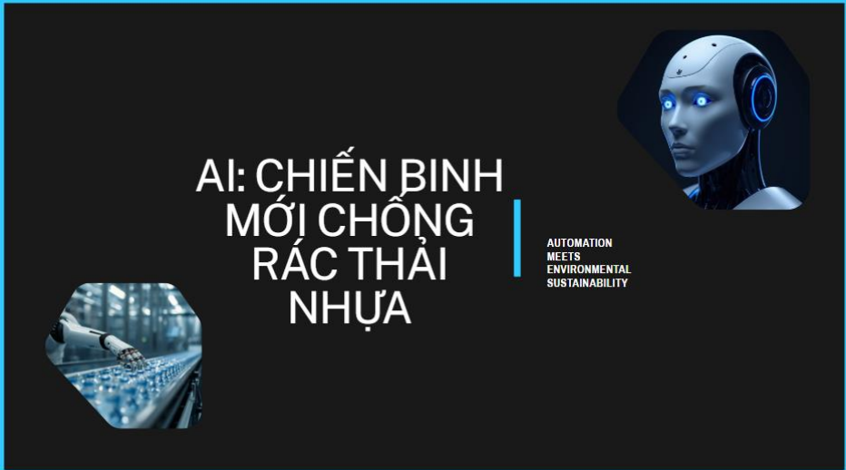

Mỗi năm, thế giới thải ra hàng triệu tấn rác nhựa nhưng tỷ lệ tái chế thành công lại rất thấp. Nút thắt lớn nhất thường nằm ở khâu phân loại. Lời giải cho bài toán này đang dần được hé lộ nhờ một công nghệ đột phá: Trí tuệ Nhân tạo (AI), đặc biệt là Thị giác máy tính (Computer Vision).
1. "Đôi mắt" thần kỳ từ Computer Vision
Với rác thải bẹp dúm hay dính bẩn, các phương pháp phân loại quang học truyền thống thường "bó tay". Đây là lúc AI bước vào. Bằng cách sử dụng hệ thống camera cảm biến kết hợp thuật toán Học sâu (Deep Learning), máy móc có thể quét hàng nghìn khung hình mỗi giây. Chúng nhận diện màu sắc, hình dáng và đặc tính vật lý của từng mảnh rác trên băng chuyền với độ chính xác vượt trội.

Hình ảnh hệ thống robot cảm biến tại nhà máy tái chế
(Ảnh tạo bằng DALL-E 3 và tinh chỉnh bởi tác giả).
2. Huấn luyện mô hình: Dạy máy tính "nhìn" rác
Để AI phân biệt được chai PET tái chế và túi nilon bỏ đi, các kỹ sư sử dụng Mạng nơ-ron tích chập (CNN). AI được "học" qua hàng triệu bức ảnh rác thải ở mọi trạng thái, tất cả đều được dán nhãn (Data Labeling) thủ công cẩn thận. Qua quá trình huấn luyện, AI tự trích xuất được đặc trưng của từng loại nhựa, giúp hệ thống đạt độ chính xác lên tới hơn 95%.
3. Sự kết hợp hoàn hảo giữa AI và Robotics
Nhận diện được rác mới chỉ là bước đầu. Khi hệ thống Computer Vision phát hiện mục tiêu, nó lập tức tính toán tọa độ (X, Y, Z) và tốc độ băng chuyền. Mệnh lệnh được truyền tới các cánh tay robot hút chân không để gắp chính xác mảnh rác trong phần nghìn giây, cho phép hệ thống làm việc liên tục 24/7.
TỔNG KẾT
Sự kết hợp giữa AI và Robotics đang tạo ra một cuộc cách mạng trong khâu phân loại, tối ưu hóa cả tốc độ lẫn độ chính xác. Công nghệ này đang mở ra hy vọng về một nền kinh tế tuần hoàn, nơi rác thải nhựa không còn là gánh nặng mà thực sự trở thành nguồn tài nguyên giá trị.